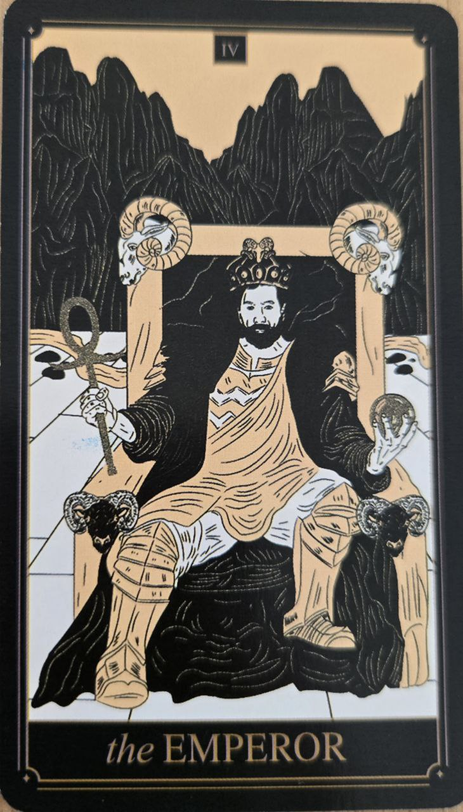

Cisár predstavuje poriadok, štruktúru a stabilitu. Je to energia, ktorá dáva veciam rámec a pravidlá, aby mohli fungovať dlhodobo.
Na rozdiel od Cisárovnej, ktorá podporuje prirodzený rast, Cisár ho organizuje a usmerňuje.
Cisár symbolizuje autoritu, disciplínu a kontrolu nad prostredím. Hovorí o potrebe nastaviť hranice a vytvoriť stabilný systém.
Táto karta často ukazuje situáciu, kde je dôležitá zodpovednosť a jasné rozhodovanie.
Na karte je zvyčajne postava sediaca na tróne, často v pevnom a symetrickom prostredí.
Prvky ako kamenné štruktúry alebo brnenie symbolizujú stabilitu a ochranu.
Ram alebo podobné symboly môžu odkazovať na silu a odhodlanie.
Cisár nie je o emóciách, ale o fungovaní systému. Preto sa často objavuje v situáciách, kde treba „upratať chaos“ a nastaviť jasné pravidlá.